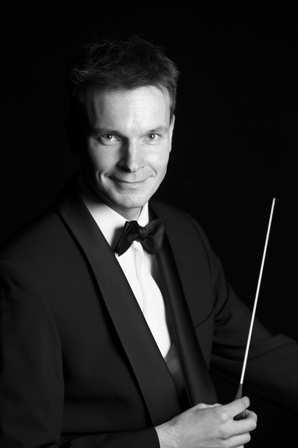
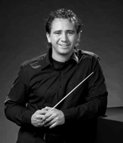

Orkesten
Symfonieorkest Ensuite
Ensuite is voortgekomen uit het strijkersensemble "Ma Non Troppo" en is in de zomer van 2002 opgericht als ondervereniging van ESMG Quadrivium. Het orkest telt momenteel ongeveer 25 leden en is voor dit project uitgebreid tot 40 muzikanten.
Ensuite speelt werken uit verschillende stijlperiodes. Componisten die de laatste jaren aan bod kwamen zijn onder andere Bach, Debussy, Dvorák, Grieg, Mozart, Mussorgsky, Pachelbel en Ravel. In het verleden zijn een aantal grote projecten neergezet door Ensuite: het jazzconcert in 2006, het Requiem en Magnificat van John Rutter in 2008, projectconcerten 'Peer Gynt, een man op zoek' in 2009 en 'Dancing on the G-string' in 2010.
Dirigent
Sinds april 2009 staat het symfonieorkest Ensuite onder leiding van Ghislain Bellefroid. Ghislain studeerde klarinet aan het Rotterdams Conservatorium bij Walter Boeykens en aan het Sweelinck Conservatorium bij Piet Honingh. Hier behaalde hij zijn diploma's voor Docerend– en Uitvoerend Musicus. Tijdens zijn studie behaalde hij diverse prijzen in binnen– en buitenland. Zo won hij in 1991 het concours van de stichting "Jong Muziektalent Nederland". Naast klarinet is hij ook tweede fase afgestudeerd Hafa-directie bij Jan Cober en Gert Buitenhuis.
In 2003 behaalde Ghislain zijn diploma eerste fase orkestdirectie bij Kerry Woodward met een uitvoering van o.a. de vierde symfonie van Bruckner. Hij volgde masterclasses bij Jorma Panula, Arie van Beek, Ed Spanjaard, Roberto Benzi en Jan Stulen en dirigeerde zodoende al eens het Nederlands Promenade Orkest tijdens een concert in Amsterdam.
Harmonieorkest Auletes
Auletes is het harmonieorkest van ESMG Quadrivium. Het orkest bestaat uit ongeveer bijna 50 leden, maar voor dit project wordt het orkest aangevuld tot ongeveer 70 muzikanten. De muziek die Auletes repeteert en uitvoert is zeer gevarieerd, van de klassieke werken tot het lichtere repertoire van film- en musicalmuziek. De symfonische blaasmuziek neemt een speciale plek in het repertoire in. Mede door dit brede repertoire is het elk jaar weer een uitdaging om een muzikale topprestatie te leveren. Een aantal grote projecten in de afgelopen jaren zijn Carmina Burana (2006), The Queen Symphony (2007), Divinity (2008) en de 3TU-concerten (2009).
Dirigent
 Sinds oktober 2008 is Jos Schroevers dirigent bij Auletes. Jos begon met het studeren van slagwerk aan het Sweelinck conservatorium te Amsterdam. Toen Jos in zijn 3e jaar conservatorium een baan kreeg bij de FKKL als paukenist, meldde hij zich aan voor de opleiding HaFa directie aan het Brabants conservatorium te Tilburg. Daar voltooide hij zowel zijn HaFa directie eerste fase als zijn opleiding slagwerk. Daarna maakte hij zijn opleiding compleet door de studie 2e fase HaFa directie (master) af te ronden bij Alex Schillings aan het Koninklijk Conservatorium te Den Haag.